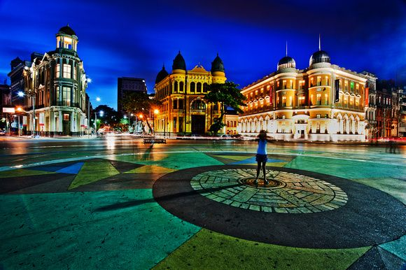
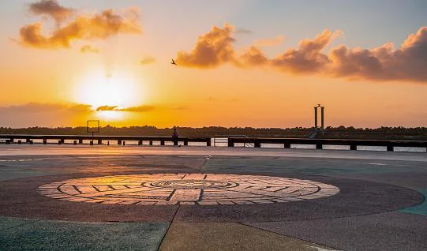

Informações principais:
A Praça Rio Branco, também conhecida como Marco Zero, é um espaço público localizado no bairro do Recife da cidade homônima, capital de Pernambuco. O local fica próximo ao Porto do Recife e abriga o Marco Zero da cidade do Recife. É deste marco que são feitas todas as medidas oficiais de distâncias rodoviárias locais
O que significa o Marco Zero do Recife?
O Marco Zero no Recife Antigo é o lugar de referência onde a cidade nasceu e todas as medidas oficiais de distâncias rodoviárias usam como ponto de partida. Seu nome é, na verdade, Praça Rio Branco e fica ao lado do Porto de Pernambuco.

Após ter permanecido submerso até meados do século 18, por ser a rota de entrada pelo mar, o Marco Zero de Recife foi oficialmente inaugurado em 31 de janeiro de 1938. Nos anos 1990, o entorno também passou por reformas que buscaram revitalizar a área portuária, o que implicou a retirada de parte da cobertura vegetal que ali existia. Com isso, os antigos casarões deram lugar a novos estabelecimentos e avenidas.
